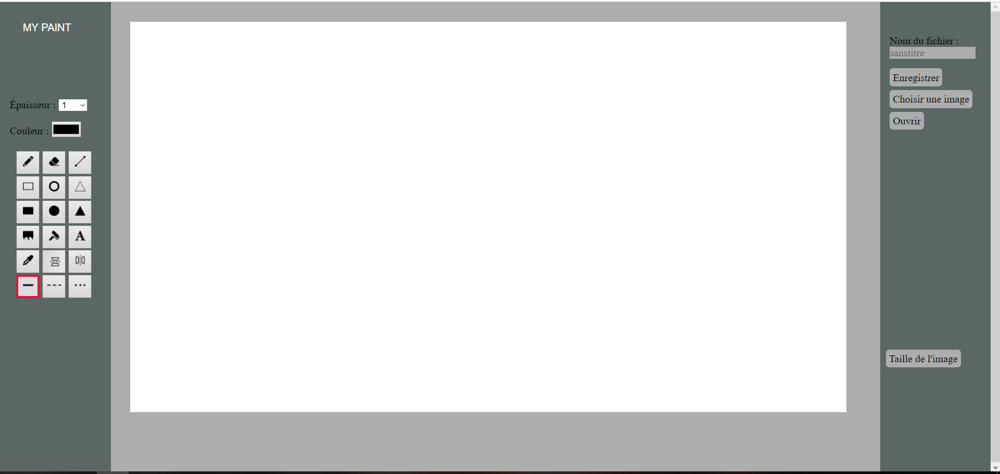

Portfolio
| Nom Prénom : | Cyrus Jérôme |
| Né le : | 1er Juin 1992 |
| Une qualité : | Curieux |
| Un défaut : | Indécis |
| Nationalité : | Française |
Mon profil professionnel
S'il est souvent conseillé de se spécialiser dans un langage, ma première envie est de pouvoir rester polyvalent. Capable de m'adapter en fonctions des langages demandés et répondre aux divers besoins de l'entreprise ou de mon équipe. Cependant, j'avoue avoir une préférence sur des technos comme ReactJS, NodeJS ou encore Symfony.
Comment me joindre
- Mail : jerome.cyrus@epitech.eu
- Téléphone : 06 11 12 72 01
- Linkedin : Vers mon profil
- Mon CV disponible : ici !
Assistant Pédagogie
Pendant une semaine, ma tâche a été d'aider et de conseiller des élèves issus d'une école de commerce (ISG) qui n'avaient jamais codé avant. Le tout afin de réaliser une application mobile capable de donner la météo pour la semaine en renseignant le nom d'une ville.
Formation développeur web
Proposée par la Web@cadémie by Epitech, cette formation propose de devenir développeur web Fullstack en l'espace de 2 ans.
Diplomante d'un bac+2 dans les technologies du web, elle se base sur la pédagogie par projet d'Epitech permettant d'apprendre à apprendre mais également à travailler avec rigueur et autonomie.
Mes Spécialisations
| ReactJS | NodeJS |
| Symfony | Jquery |
Connaissances & Compétences
| Laravel | Javascript | PHP |
| Python | Django | Phaser |
| Bootstrap | SASS | GitLab |
| Photoshop | HTML/CSS | MySQL |

Puissance 4
|
Tweet Académie
|

My Paint
|
|
Previously On
|
Jeu d'échecs
|
Doodle Run !
|
Mes loisirs
Grand fan de jeux vidéos, je ne compte plus le nombre d'heures durant lesquelles j'ai pu jouer. Ni le nombre de jeux. En solo mais surtout en multi !
Amateur de cinéma, nombreux sont les films et les séries que j'ai pu regarder une ou plusieurs fois. Sans oublier les mangas, manhwas ou webtoons.
Moins connus du grand public, les forums RPG font aussi partis de mes passe-temps préférés. Créer et incarner un personnage un peu différemment d'un jeu vidéo est toujours intéressant !
Surveille ton langage !
Français courant à l'oral et écrit
Anglais technique